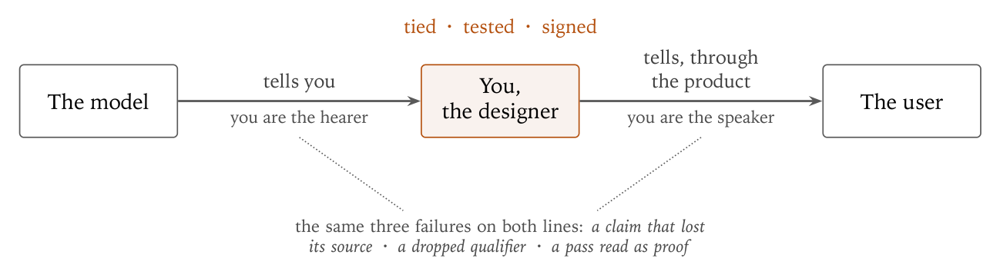
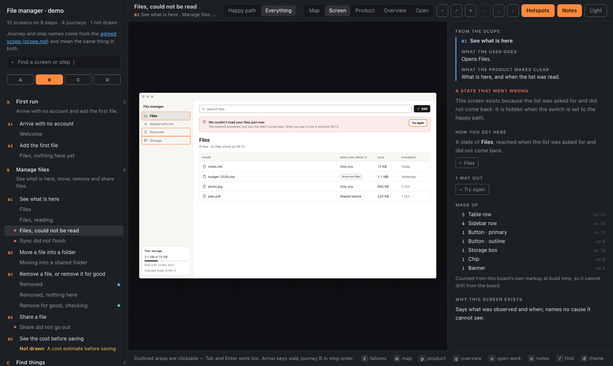
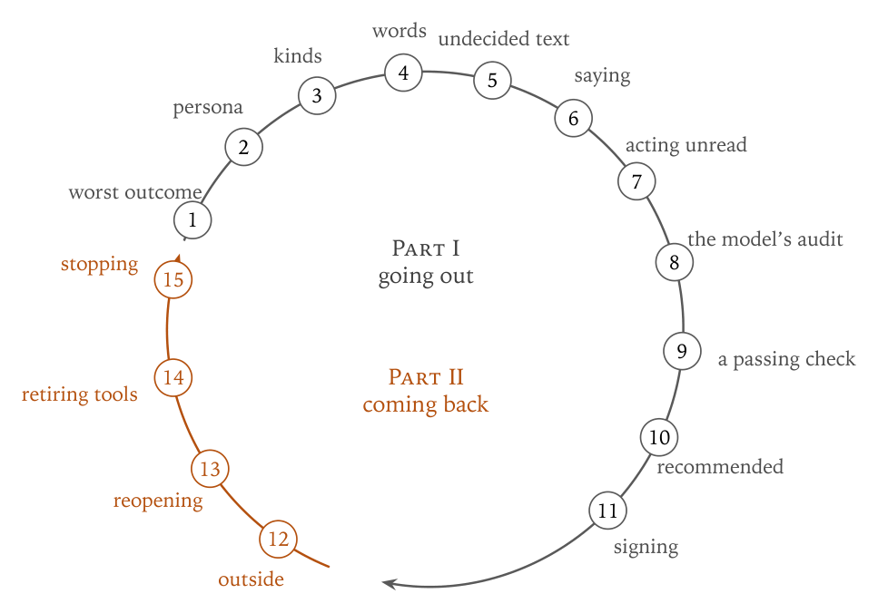

Examined design
Every claim, on a screen or in the record, should say what it rests on, and a person should answer for it.
When you design with an AI model you stand between two lines of testimony. The model tells you things, and through the product you tell users things. The same failures turn up on both lines: a claim that lost its source, a dropped qualifier, a pass read as proof. One discipline answers them.

What examined means
- Tied: it says what it rests on.
- Tested: it has met the strongest objection anyone found.
- Signed: a person answers for it.
Examination is necessary, not sufficient. An examined design can still be wrong; an unexamined one is right only by luck.
The harness
One HTML file is the prototype: the design system, every board, what each board means, and a viewer with five views. It changes one scripted patch at a time. A build step refuses when a link label is not on its board or an id does not resolve, and reports everything else as a number for a person to weigh. Thirteen checks run against it; each says what it cannot see.

Walk through it in the tutorial; the fields, tools and checks are in the reference.
The loop
